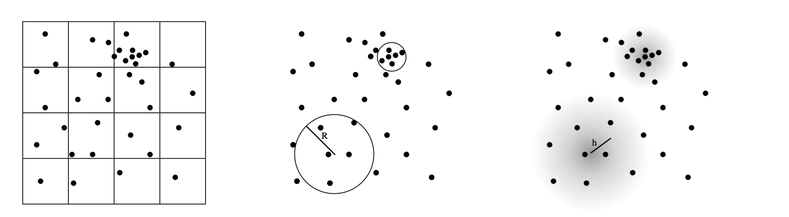

Hierarchy in wiki:
This page is not reviewed
SPH 光滑粒子
基础
SPH -- Smoothed Particle Hydrodynamics
基本方程来自于：

思想：对于任一物理量，通过流体在一系列采样点处的值，来插值近似得到流体在任意位置的值。
其中的\(W_{ij}\)是权重函数。
从而定义如下的空间离散微分运算
最后一个公式是拉普拉斯算子，\(0.01h^2\)是正则化项。
密度能够用如下公式计算
算法框架
SPH 求解器有如下三大组件：
- 邻域搜索
- 压强计算
- 时间积分
其中时间积分通常和压强计算一起讨论，主要研究内容是如何计算压强以满足流体的不可压缩性。
foreach Particle P: -> 1
find neighbours.
foreach Particle P:
compute density.
foreach Particle P: -> 2
compute pressure force.
compute viscosity force
compute external force
merge all the forces.
foreach Particle P: -> 3
update velocity, position.
时间积分步长：
CFL Condition should be considered carefully when using this method.
邻域搜索
主要有两类算法
- 层次数据结构
- 均匀网格划分
层次数据结构
主要有如下几种数据结构：
- Kd树（八叉树）和多分辨率网格方法
- VDB数据结构
均匀网格划分
将整个空间均匀地划分为网格，构建时将粒子分配到各个网格中，查询邻居时查询相邻多个网格中的粒子。
Index Sort
在构建时尽可能避免Race Condition，利用并行提高性能。
Z-index Sort
提升程序的空间连续性，增加缓存命中概率。
Hash
使用空间散列方法。
GPU 方法
SPH方法几乎没有数据依赖问题，因此可以利用GPU来进行加速。
- Real-time smoke rendering using compensated ray marching.
- Temporal blending for adaptive SPH.
总结
时间复杂度：Hierarchy > Grid
- Grids: \(O(n)\) build, \(O(1)\) access
- Hierarchy: \(O(n log n)\) build, \(O(log n)\) access.
空间复杂度：Hierarchy < Grid.
- Iterative: Reuse the structure frequently, and we can store the neighborhood set, and rebuild it from time to time.
- Non-Iterative:
不可压缩性
流体的不可压缩性体现在压强上。
大体上有两类解法：
-
弱可压缩：弱可压缩流体并没有严格求解不可压缩方程\(\nabla u = 0\)，但通过压强来施加一个恢复原本体积的力，来“模拟”不可压缩性。
对应：Local Pressure Solver 2. 强可压缩：相反的，其求解了不可压缩方程，使得不可压缩性严格满足
对应：Global Pressure Solver
弱可压缩流体（Non-Iterative EOS Solvers）
弱可压缩性直接通过单次、显式的压强计算来体现：
例如直接用EOS（状态方程）求解
通常使用的是：
也有多种不同的选择：
- A switch to reduce SPH viscosity.
- \(p_i = k (\rho_i - \rho_0)\)：Smoothed particles: A new paradigm for animating highly deformable bodies.
- \(p_i= k(\frac{\rho_i}{\rho_0}- 1)\)：Adaptively sampled particle fluids
也通过 Operator Splitting 来将压强计算和其他力的计算分开：
foreach P: find neighbours
foreach P: compute Non-Pressure forces -> Advection
foreach P: compute Pressure forces. -> Projection, use data from Advection
foreach P: update velocity & position
强可压缩流体
强可压缩流体可以通过：
- 多次迭代应用弱可压缩流体的方程（Operator Splitting的第三步多次迭代）
- 直接求解EOS方程
第一类的实现：
- PCISPH
- LPSPH
foreach P: find neighbours
foreach P: compute Non-Pressure part. -> Advection
repeat until convergence: -> Projection(weak)
foreach P: compute density and pressure
foreach P: update velocity and positions
第二类的实现：
- IISPH
foreach P: find neighbours
foreach P: compute Non-Pressure part. -> Advection
foreach P: compute rho*
solve PPE -> Projection
compute Pressure Force
update v, x
边界处理和流固耦合
主要有如下几类方法：
- 基于粒子
- 基于隐式曲面
- 基于边界压强
- 基于惩罚
粒子方法
对于其他物体表面也离散为粒子，计算基于粒子距离的惩罚力
The boundary particles serve as additional sampling points and typically have the same radius as the fluid particles.
计算压强和力时，需要考虑从其他物体表面采样的其他粒子。
根据采样方法的不同，可以分为：
- 均匀采样、非均匀采样：对于曲率较大处的边界应该被分配更多的采样点来保持细节
- 单层、多层采样：多层采样有助于防止穿透
优点：
- 算法实现简单：生成采样点、积分、计算实现简单
缺点：
- 对于弱可压缩流体，需要小时间步长（压强变化大）
- 简单的几何图形都需要大规模的粒子
-
边界处理并不准确
bumpy representation: reduce the accuracy of pressure computation, introduce artificial friction. → Implicit boundary representation.
隐式曲面表示
边界压强计算
不依赖于粒子，而直接对于边界生成压强：
Original, without boundary:
With boundary:
对于其中的\(p_k\)，有几种定义方式：
- Pressure Mirroring: \(p_k = p_i\)
- Pressure Extrapolation:
基于惩罚
缺点: hard to control the stiffness, and have small time steps.
总结
SPH 方法的问题：
-
Approximate Quality:
- particle count is low => degradation of approximation
- lack of practical and sufficient solution: because negative pressure are clamped to 0, only projective Jacobi or GS Iteration is allowed. Conj-Grad is not available currently.
-
Unified Solver & Ultimate Coupling:
-
Unified Coupling solver.
- Suitable for multiple particle-resolution.
- Artist Control
- Data Driven